NEW · 아시아 최초 디즈니 크루즈
온 가족이 함께라서
더 특별한 디즈니 크루즈
‘여행 먼저, 돈은 나중에!’
월 49,500원으로 2인이 먼저 떠나요
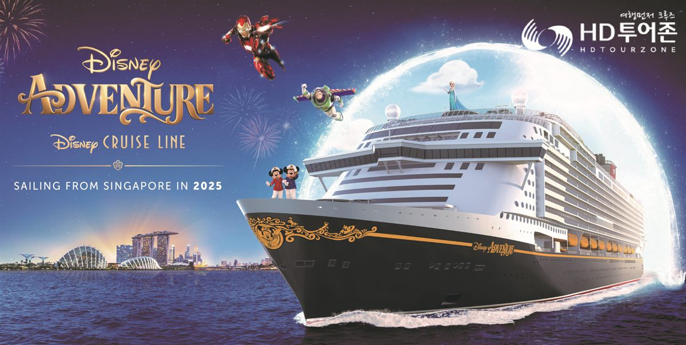
- 월 납입49,500원
- 디즈니2인 이용
- 출발 시점15회차 납입 후
PART 1
크루즈 여행,
왜 망설이셨나요?
-
비용당장 목돈이 필요하지 않을까?
목돈 부담 없이 여행 먼저!월 49,500원씩 15회만 내면 출발해요. 남은 금액은 다녀와서 나눠 내요.
-
자유정해진 일정에 갇혀 답답하지 않을까?
선상에서 즐기고, 세계를 만나요매일 바뀌는 공연, 수영장, 액티비티에 기항지 관광까지 함께해요.
-
시간긴 일정과 이동 시간이 부담되지 않을까?
이동하는 순간도 여행이 돼요먹고, 즐기고, 쉬는 동안 다음 여행지에 도착해요. 짐을 풀었다 쌀 필요도 없어요.
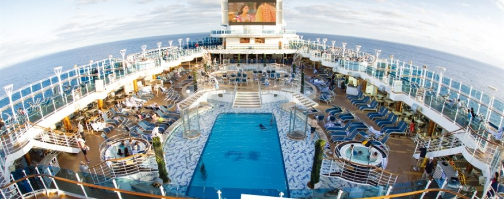
DISNEY CRUISE LINE
디즈니 어드벤처호
싱가포르 출항 5~6일
- 20만 톤급디즈니 최대 규모 선박
- 7가지테마 구역
- 아시아 첫디즈니 크루즈
디즈니의 7번째 크루즈이자 동남아 최대 규모의 크루즈예요. 디즈니 테마부터 픽사, 마블까지, 워터슬라이드와 롤러코스터로 모든 연령대가 함께 즐길 수 있어요.
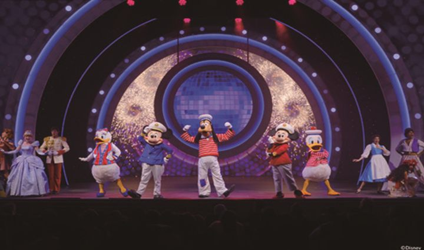
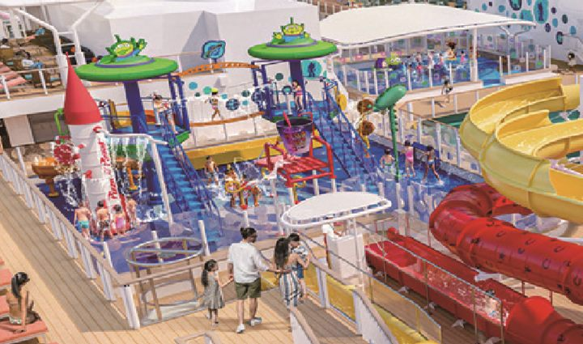
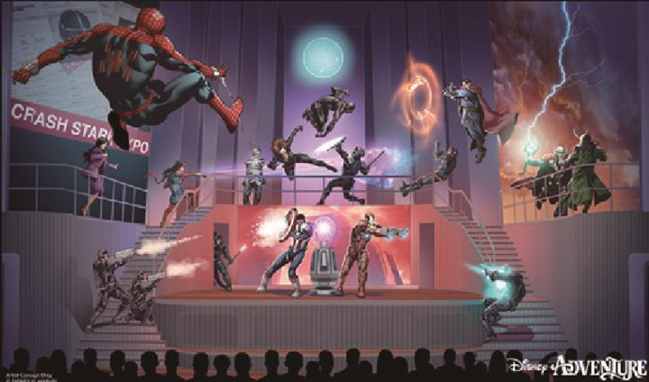
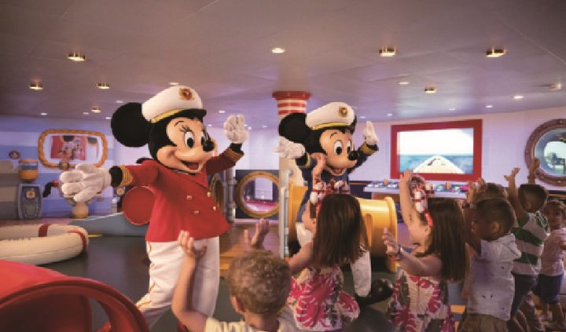
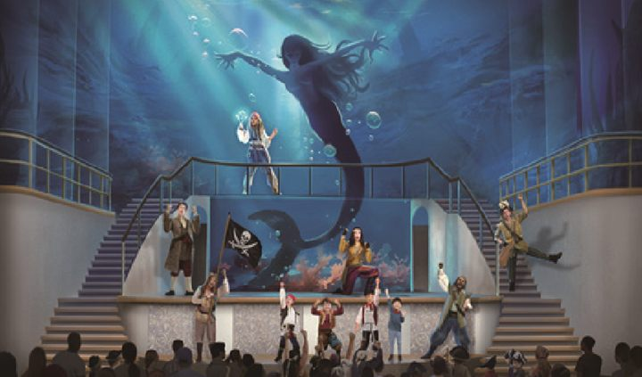
7가지 테마 구역
- 상상정원
- 디스커버리 리프
- 토이스토리 플레이스
- 마블 랜딩
- 웨이파인더 베이
- 타운 스퀘어
- 샌프란시스코 거리
일정 예시
디즈니 크루즈
이렇게 다녀와요
- 1일차인천공항 출발 → 싱가포르 도착 → 호텔 투숙 또는 크루즈 승선
- 2일차디즈니 어드벤처호 승선 → 싱가포르 출발
- 3일차전일 해상 · 7가지 테마 구역 경험
- 4일차전일 해상 · 테마 메인 다이닝 경험
- 5일차전일 해상 · 놀이공간, 키즈클럽, 공연장, 영화관
- 6일차싱가포르 공항 출발 → 인천공항 도착
포함
왕복 항공, 크루즈 숙박 3박(2인 1실), 싱가포르 호텔 1박(2인 1실), 싱가포르 관광, 가이드 팁, 크루즈 전문 인솔자, 공동경비, 여행자 보험
불포함
크루즈 선내 팁(1인 약 $48, 1일 $16×3박), 크루즈 유료시설, 객실·항공 업그레이드, 독실 요금, 개인 경비
- 현재 기항지 없이 운항하며, 기항지가 추가되면(말레이시아·태국 등) 관광 요금은 별도예요.
- 최소 출발 10명 · 월 1회 출발 · 가예약 필수(항만세와 불포함 사항 입금 시 여행 확정)
PART 2 · 여행먼저 크루즈 멤버십
15회차만 내면
바로 출발해요
총 120회 중 15회만 정상 납입하면 나머지 87.5%는 회사가 먼저 지원해요. 남은 회차는 다녀와서 나눠 내면 돼요.
- 1회가입
- 7회가예약
- 15회출발!
- 120회만기
일반형
월 49,500원 × 120회
- 상품금액
- 5,940,000원
- 이용 인원
- 디즈니·동남아 2인 / 유럽 1인
- 이용 객실
- 내측 객실(2인 1실)
- 선지원
- 15회차 정상 납입 후 여행 가능
- 만기환급
- 85%
이 페이지 전용 혜택
최대 600,000원 할인
이 페이지에서 상담 신청 후 가입하면 구좌당 30만 원, 2구좌 가입 시 최대 60만 원을 할인해 드려요.
여행 출발 전 연체·미납이 있으면 선지원 서비스를 받을 수 없어요(완납 후 여행 가능).
멤버십 혜택
가입 회원만 누리는
6가지 혜택
- 여행먼저! 선지원 서비스15회차 정상 납입 후 먼저 출발하고, 7회차 납입부터 가예약할 수 있어요.
- No쇼핑 · No옵션 · No팁인솔자·가이드·기사 팁까지 포함된 고품격 여행이에요.
- 전 일정 기항지 관광 포함단독 크루즈 행사로 진행해요.
- 크루즈 전문 인솔자 동행전 일정 인솔자가 함께하고 현지 가이드가 더해져요.
- 와인·맥주 1회 · 선상신문 번역크루즈 여행 중 소소한 즐거움까지 챙겨요.
- 국외·국내 출발 전세선일본·대만 전세선도 이용할 수 있어요.
멤버십 기본 노선
디즈니 말고도
이런 곳에 갈 수 있어요
-
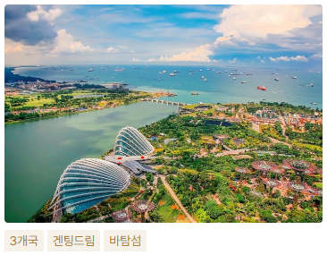
일정 상세보기 ›동남아·아시아 2인
싱가포르·태국·일본·국내출발 6~7일
로열캐리비안, 겐팅드림, MSC 벨리시마호 대표 일정
-
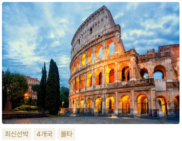
일정 상세보기 ›서부 지중해 1인
이탈리아-프랑스-스페인-몰타 10~11일
코스타 토스카나, NCL 던호, MSC 월드아시아호 대표 일정
-
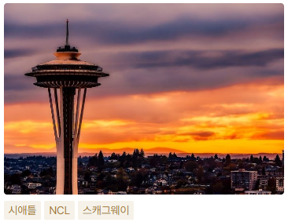
일정 상세보기 ›알래스카 1인
미국 시애틀 출항 빙하 크루즈 10일
NCL 앙코르호 · 스캐그웨이, 글레이셔 베이 국립공원
-
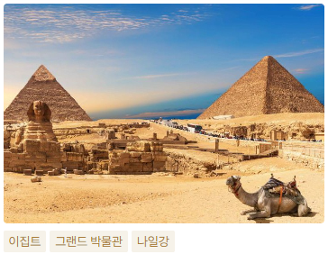
일정 상세보기 ›이집트 1인
카이로·룩소르·나일강 리버크루즈 10~11일
5성급 리버크루즈, 피라미드, 룩소르 신전, 아부심벨
동부 지중해·북유럽·아라비아해·장강 등 다른 노선과 업그레이드 상품(프리미엄+)은 상담 때 안내해 드려요.
예약 방법
가예약은
이렇게 진행돼요
- 여행지·출발월 정하기출발 약 7개월 전, 원하는 여행지와 출발월을 정해요.
- 전화로 가예약인원수와 함께 전화로 가예약해요.
- 확정 일정 안내출발 3~4개월 전 해당 월 일정이 나오면 문자로 확정일자와 일정표를 보내드려요.
- 확정 예약안내받은 날짜 중 맞는 날을 골라 확정 예약을 요청해요. 인기 일정은 빨리 마감될 수 있어요.
가예약 후 출발 3~4개월 전까지 예약을 취소할 수 있어요. 가예약은 예약 의사 표시이며 실제 예약과는 달라요.
PART 3 · HD투어존, 그리고 신뢰
숫자로 증명된
크루즈 전문 여행사
- 164,000명누적 고객 수
- 1,013억 원누적 선수금
- 11,000명크루즈 여행 인원
2025년 기준 · HD투어존 브로슈어(2026년 4월 개정)
- 머니투데이 ‘여행먼저 크루즈’ 2년 연속 히트상품대상
- 2025 미래창조경영우수기업대상 · 고용노동부 장관상
- COSTA 크루즈 ‘Fly&Cruise’ 송출 1위 · 2025 코스타 어워드
- MSC 크루즈 송출·판매·고객 등 전 부문 1위 여행사
고객 납입금은 이렇게 지켜져요
- 선불식 할부거래업 등록2023년 2월 등록을 마쳐 법이 정한 소비자 보호를 받아요.
- IBK기업은행 지급보증고객 납입금에 대해 지급보증 계약을 맺어 선수금 합계액의 50%를 보전해요(2026.2.3~).
- 회계법인 감사HD투어존(주)는 회계법인 예원의 회계감사를 받았어요.
| 선불식 할부거래 관련 자산 | 54,233,752,747원 |
|---|---|
| 총 고객환급 의무액 | 27,940,925,661원 |
크루즈 파트너, 이렇게 달라요
| HD투어존 | 일반 상조·재판매 | |
|---|---|---|
| 계약 방식 | 글로벌 선사와 직접 계약(PSA)·직영 운영 | 타 여행사 상품 재판매·외주 |
| 출발 조건 | 15회차 납입 후 출발 | 전액 완납 후 출발 |
| 현지 행사 | No쇼핑·No옵션·No가이드팁 | 현지 쇼핑·추가 결제 발생 가능 |
| 자산 보호 | 할부거래법 적용 + IBK기업은행 지급보증 | 보호 장치 확인 필요 |
무료 상담 신청
지금 상담 신청하고
최대 60만원 할인받으세요
원하는 노선만 남겨주시면 담당자가 자세히 안내해 드려요.
010-5945-2153전화로 바로 상담받기 ›